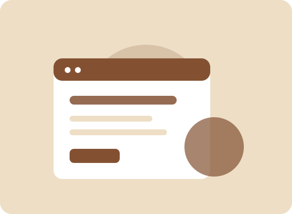

01 · Tekst
Gebruik deze kaart voor een inleiding, verhaal of opvallend citaat.
Een heldere basis voor jouw volgende website. Vervang de voorbeeldteksten, foto’s en kleuren door je eigen inhoud.
Begin met jouw verhaal
Topbar, navigatie, inhoud en footer vormen samen één bruikbare basis. Elke pagina heeft bovendien een verticale en een horizontale scrollmogelijkheid.
Vervang deze voorbeeldtekst door jouw eigen boodschap.
Gebruik afbeeldingen of grafieken bij de juiste inhoud.
Maak duidelijk hoe ze verder kunnen.
Gebruik deze kaart voor een inleiding, verhaal of opvallend citaat.
Voeg een eigen afbeelding met een korte beschrijving toe.
Plaats hier een toegankelijke grafiek of een klein overzicht.
Leg hier het resultaat of een voordeel in gewone taal uit.